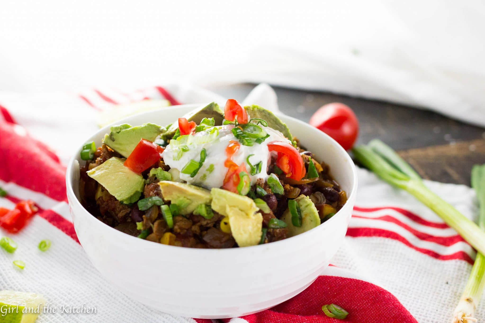

"Award Winning" Veg Chili

Recipe Description
This vegetarian (and easily vegan) chili recipe is my wife and I's favorite. We experimented with it for months, like we do with most of our original recipes, until we felt that it could not be improved upon. We did win (in a blind taste test against all non-veg chilis) a family chili cook-off in the Summer of 2019, so we half-jokingly call it "award winning".
Ingredient List
- 2 Sweet Onions (carmelized)
- 1 Bulb of Garlic (oven roasted)
- 2 Bell Peppers (red, yellow)
- 1 Can of Kidney Beans
- 1 Can of Chili Beans
- 1 Can of Pinto Beans
- 1 6oz. Can of Tomato Paste
- 1 Bag Quorn Grounds (mycoprotein)
- 1/2 Bag of Frozen Corn
- Habanero Pepper (to taste)
- Jalapeño Pepper (to taste)
- 1 Tbsp Apple Cider Vinegar
- 1 Cup of Vegetable Broth
- 1/4 Cup of Corn Flour (as thickener)
- 1 tsp of Cumin Powder
- 1/2 tsp of Cayenne Powder
Ordered Directions
- Carmelize onion in skillet with some oil.
- Roast whole garlic bulb in oven wrapped in foil.
- Add all ingredients to pot or slow cooker.
- Add jalapeños and habaneros (diced finely) to spice preference.
- Cook in slow cooker: On High (min. 4 hrs); On Low (min. 8 hrs).
- Salt and Pepper at end to taste
- As cooking, add broth/water/olive oil if needed
- *Add chipotle peppers (in adobo sauce) to taste
- *Serve with high-quality greek yogurt or sour cream
- *Serve with sliced avocado
Sick of peeling garlic? You have to check this garlic roasting method out:
Watch and Learn (3:47)